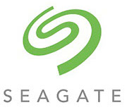
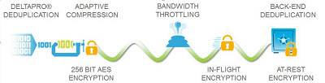

Cloud Services
Securing and validating your backups
Your data is probably the most important asset for your business. However, securing it from loss or a major disaster can be a nightmare. Typical backups are taken to tape, or simply a USB disk, but there is no validation whether those backups can provide a reliable recovery. Changing backup tapes is often a boring routine task that can be neglected and therefore puts at jeopardy your data’s security. And taking tapes offsite, for peace of mind in case of a disaster, is in reality introducing new security risks!
A subscription-based managed service
The Managed Cloud Backup and Recovery service, offered by Bonema Technologies, delivers cloud-connected backup and recovery in the form of a cloud service, using state-of-the-art backup software from EVault, now part of Seagate, world leaders in storage technology.
Preparing for Disaster Recovery
These deployments are built on a single technology platform, which makes it easy to mix and match to meet your business needs. Bonema Technologies recommends the cloud service as it provides you with immediate offsite disaster protection, preparing you for Disaster Recovery. It’s the best way to make sure your critical data, applications, and systems are safe and available.
Advantages of using our solution
- Off-site data backup
- In secure data centres
- 256-bit AES encryption
- Fully managed, subscription-based Backup as a service (Baas), including monitoring
- No capital costs for hardware or software
- Granular recovery capabilities
- Ability to restore files from your server from upto 12 months ago
- Supports various operating systems, applications and platforms
- No more worries about administering and test-restoring from your tape-backups
- Our Managed Cloud Backup complements replication solutions for a complete Disaster Recovery plan
256-bit AES encryption
Your data will be encrypted using the National Institute of Standards and Technology (NIST) 256-bit Advanced Encryption Standard (AES) prior to leaving the source server, over the wire and also at rest.
